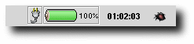
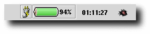
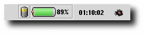
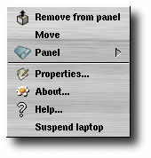
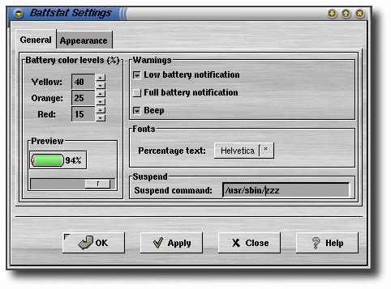
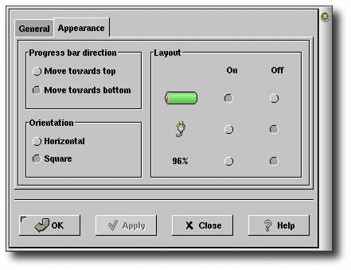
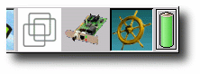

Aplet Battstat (status baterii), pokazany na rysunku 1, prezentuje stan poziomu energii baterii w Twoim laptopie. Aby dodaæ ten aplet do Twojego panelu, kliknij prawym przyciskiem myszy na panelu i wybierz Panel->Dodaj do panelu->Aplet->Monitory->Monitor baterii.
Aplet Battstat nie wymaga ¿adnych parametrów. W pewnym stopniu mo¿na ustawiæ jego konfiguracjê, co pokazano poni¿ej.

Rysunek 1: Laptop zasilany energi± sieciow±.
Rysunek powy¿ej pokazuje stan baterii przy pe³nym na³adowaniu.

Rysunek 2: Stan ³adowania baterii.
Ma³a b³yskawica na zasilaniu pokazuje siê, kiedy bateria laptopa jest w stanie ³adowania. W³±cza siê i wy³±cza do momentu, kiedy bateria nie zostanie w pe³ni na³adowana.

Rysunek 3: Laptop zasilany energi± baterii.
Kiedy Twój laptop korzysta z energii baterii, aplet wygl±da w nastêpuj±cy sposób.

Rysunek 4: Menu apletu
Klikniêcie prawym przyciskiem myszy na aplecie uruchamia menu zawieraj±ce nastêpuj±ce pozycje:
Mo¿na ustawiæ niektóre w³a¶ciwo¶ci apletu Battstat przez klikniêcie prawym przyciskiem myszy na nim, i wybranie W³a¶ciwo¶ci.... Spowoduje to wy¶wietlenie okna preferencji.

Rysunek 5: Okno Preferencje; Ogólne
W³a¶ciwo¶ci:
¯ó³ty: ustawia poziom baterii, kiedy wska¼nik na³adowania przechodzi z zielonego na ¿ó³ty. Domy¶lnie: 40.
Pomarañczowy: ustawia poziom baterii, kiedy wska¼nik na³adowania przechodzi z ¿ó³tego na pomarañczowy. Domy¶lnie: 25.
Czerwony: ustawia poziom baterii, kiedy wska¼nik na³adowania przechodzi z pomarañczowego na czerwony. Domy¶lnie: 15.
Ramka podgl±du zawiera wska¼nik na³adowania baterii i suwak. Przez "przeci±ganie" suwaka mo¿na podejrzeæ, jak bêdzie wygl±da³ aplet przy zmianie poziomu energii. To nie powoduje ¿adnej zmiany w ilo¶ci energii baterii :).
Niski poziom energii: Zaznaczenie spowoduje wy¶wietlenie informacji o niskim poziomie energii, kiedy wska¼nik przekroczy poziom Czerwony.
Pe³ne na³adowanie baterii: Zaznaczenie spowoduje wy¶wietlenie informacji o pe³nym na³adowaniu baterii.
Sygna³ d¼wiêkowy: Je¿eli zostanie to zaznaczone, Twój laptop bêdzie informowa³ sygna³em d¼wiêkowym powy¿sze zdarzenia.
Tekst procentu: Po klikniêciu tego przycisku zostanie wy¶wietlone okno wyboru czcionki. Umo¿liwia to wybranie rodzaju czcionki, jakim bêdzie wy¶wietlany tekst procentu.
Rysunek 6: Okno preferencji; Wygl±d
W³a¶ciwo¶ci na tej zak³adce:

Rysunek
10:Niektóre czê¶ci apletu
powinny byæ ukryte...

Rysunek 11: ...i s±.
Aby w³±czyæ d¼wiêki dla tego apletu, nale¿y upewniæ siê, ¿e zosta³ uruchomiony serwer d¼wiêków dla GNOME. Aby wybraæ d¼wiêki, które bêd± odtwarzane, kiedy poziomy przekrocz± warto¶ci graniczne, kliknij prawym przyciskiem myszy na panelu i wybierz: Programy->Ustawienia->Multimedia->D¼wiêki. Upewnij siê, ¿e masz zaznaczone nastêpuj±ce pozycje: Uruchom serwer d¼wiêków i D¼wiêki dla zdarzeñ. Nastêpnie kliknij na zak³adkê D¼wiêki zdarzeñ i wybierz Status baterii. Tutaj mo¿na przypisaæ d¼wiêki ró¿nym zdarzeniom apletu.
Zdarza siê, ¿e aplet "wyk³ada siê" w systemie Linux... Nie jestem pewny
jeszcze dlaczego. Pracujê nad tym. Je¿eli masz jakie¶ idee, dlaczego tak siê dzieje,
proszê napisz list email do mnie...
Najnowsz± wersjê apletu Battstat mo¿na zawsze pobraæ z nastêpuj±cych miejsc: http://battstat.sourceforge.net/
Wersja ¼ród³owa: battstat_applet-2.0.9.tar.gz
Pakiet RPM (instalacja w /usr): battstat_applet-2.0.9-2.i386.rpm
Pakiet DEB (instalacja w /usr): battstat-applet_2.0.9.deb